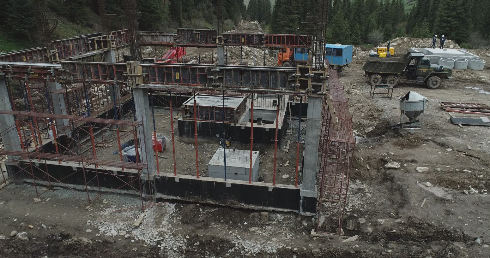
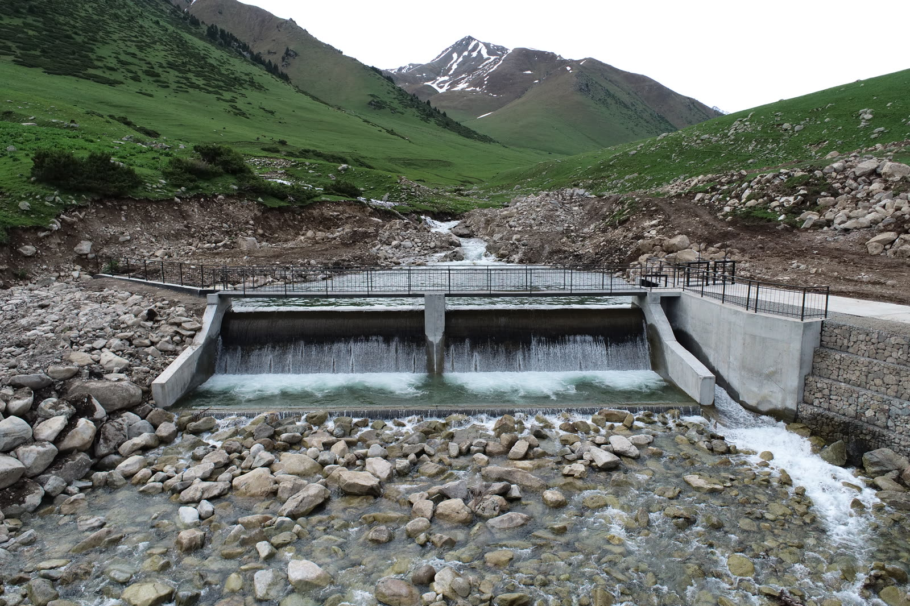
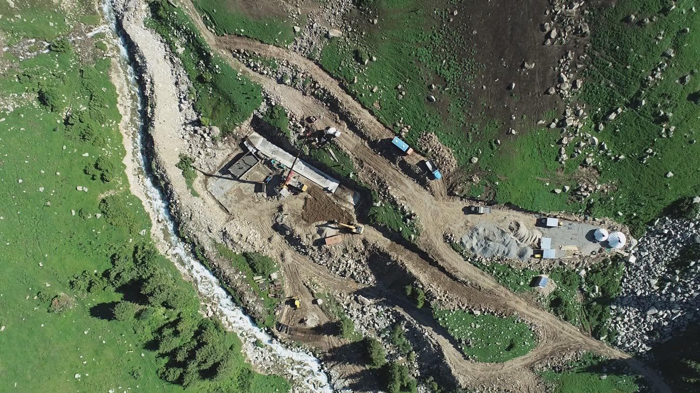
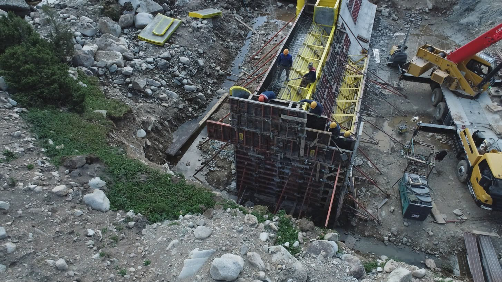
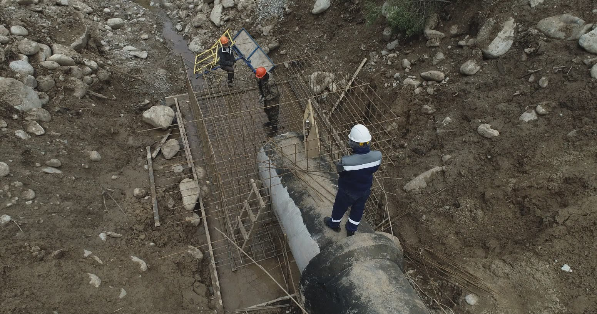
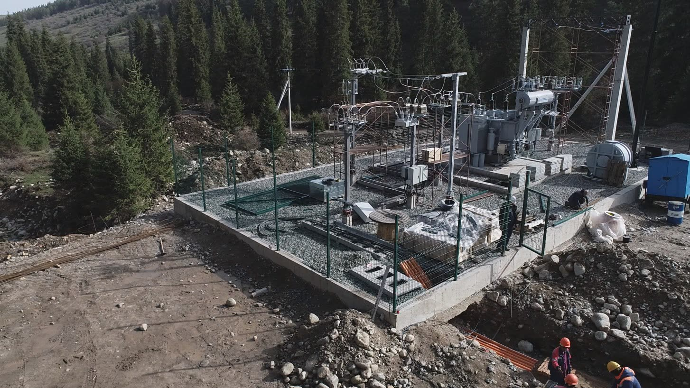
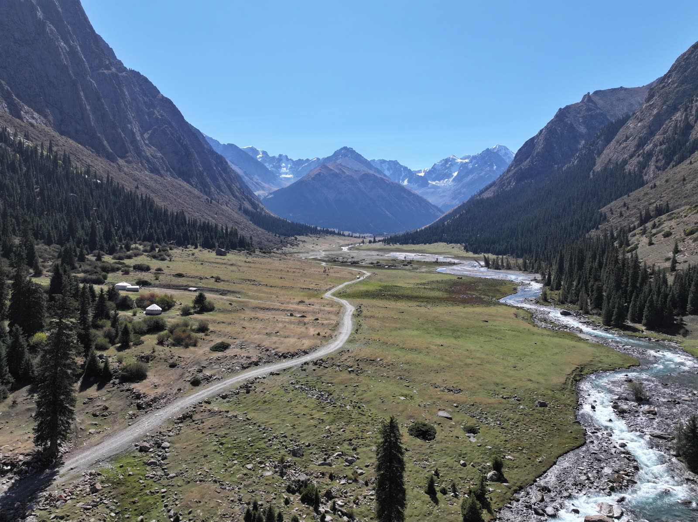

Готовим страницу

Проектирование, гидротехническое строительство, бетонные работы, поставка оборудования, монтаж, пусконаладка и сервисное сопровождение.

Реализуем единый инженерный объект, объединяя строительную, геодезическую, трубопроводную, электротехническую, монтажную и пусконаладочную части.

Строительство сопровождается профессиональными геодезистами и топографами с применением высокоточного оборудования Leica, исполнительной съемкой и мониторингом объектов с БПЛА.

Создаем ответственные железобетонные конструкции с применением профессиональных опалубочных систем, лабораторным контролем бетонной смеси и постоянным инженерным сопровождением.

Строим многокилометровые напорные трубопроводы в сложном горном рельефе с постоянным геодезическим контролем и квалифицированным сварочным персоналом.

Строим ЛЭП с инструментальной точностью: геодезическая разбивка, контроль каждой опоры и единая проектная ось трассы на всем протяжении линии.

Монтаж и запуск гидроэнергетического оборудования выполняются совместно со специалистами заводов-производителей с последующим обучением эксплуатационного персонала.

Реализуем гидроэнергетические проекты в высокогорных районах Кыргызской Республики: сложный рельеф, ограниченные подъездные пути, сложная логистика, перепады температур и короткий строительный сезон.
Геодезия на объектах компании — постоянная система точности строительства, а не вспомогательная услуга. Команда работает на всех этапах: от подготовки трассы и выноса проектных отметок до исполнительной съемки завершенных конструкций.
На объектах выполняется аэрофотосъемка с применением дронов: мониторинг строительства, обследование трасс, анализ сложного рельефа, актуализация карт и визуальный контроль выполненных объемов.
Полный комплекс монолитных железобетонных работ на гидротехнических и энергетических объектах — от армирования и установки опалубки до приготовления, укладки и контроля бетонной смеси.
Для ответственных монолитных конструкций применяются профессиональные щитовые опалубочные системы, в том числе PERI. Это позволяет выдерживать проектную геометрию, размеры и качество поверхности бетона и безопасно бетонировать массивные гидротехнические элементы.
Контролируются класс и диаметр арматуры, шаг, расположение рабочих стержней, нахлесты и соединения, защитный слой, закладные элементы и геометрия арматурных каркасов.
Ответственные этапы сопровождаются отделом ПТО: проверяется соответствие проекту, геометрия, отметки, армирование, опалубка, закладные детали, готовность конструкции к бетонированию и исполнительная документация.
Компания выполняет строительство стальных и GRP-напорных трубопроводов, монтаж фасонных элементов, опорных и анкерных конструкций и технологических узлов.
Монтаж выполняют квалифицированные сварщики с необходимыми допусками.
При монтаже контролируются проектная ось, продольный профиль, высотные отметки, положение секций, опор и анкерных конструкций. Сопровождение выполняется оборудованием Leica.
Монтаж ведется по технологии производителя под техническим контролем профильных супервайзеров поставщика.
Комплексный электромонтаж энергетических объектов: силовые сети, кабельные линии, электротехническое оборудование, системы управления, автоматика, контрольно-измерительные системы и защиты. Электротехническая часть увязывается с оборудованием станции и проходит комплексную проверку при пусконаладке.
Разбивка трассы и положение опор выполняются совместно с геодезической службой. Каждая опора устанавливается в проектном положении с контролем координат, оси и высотных отметок — линия выдерживается в единой проектной оси.